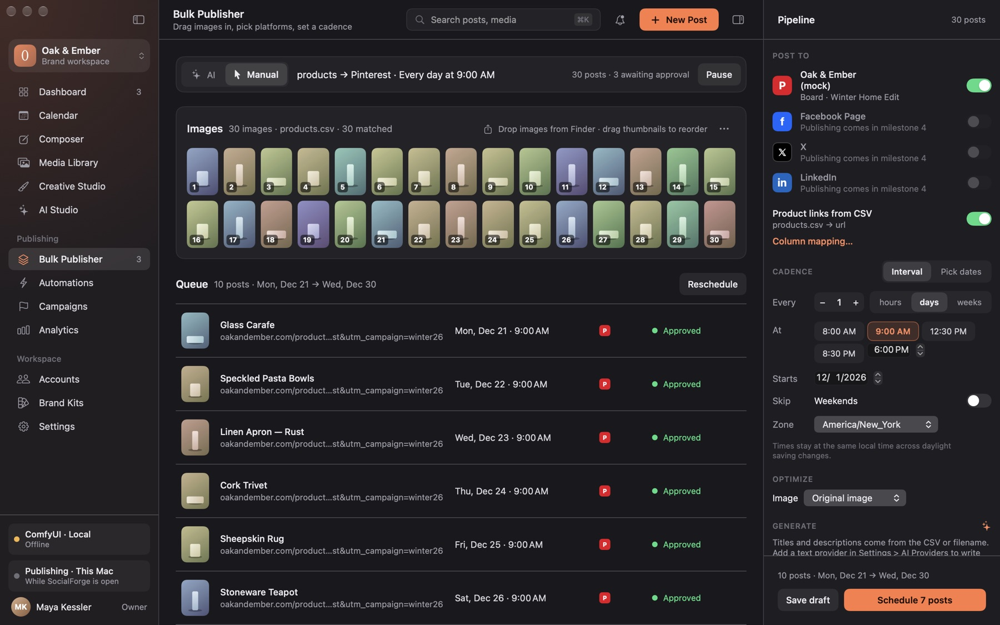
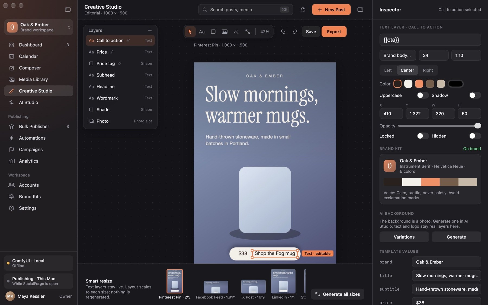
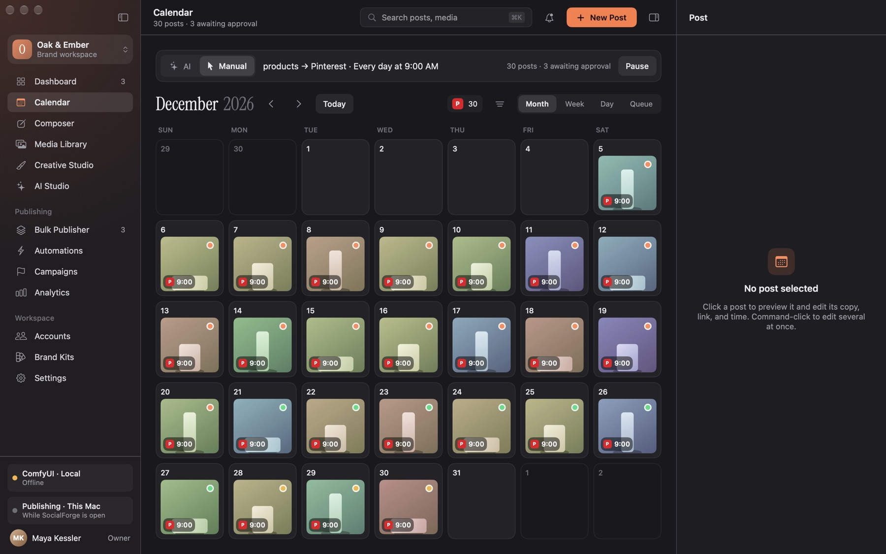
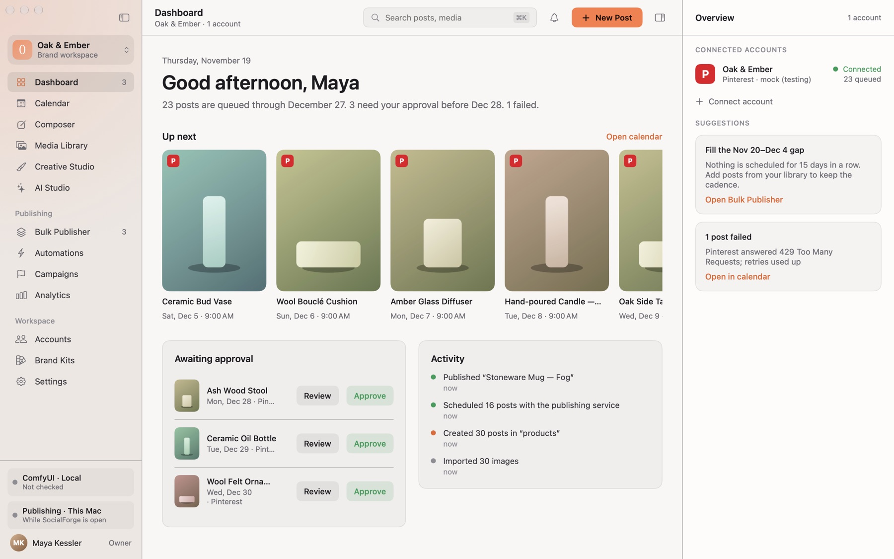

A month of Pins,
forged in one sitting.
Drop a folder of product photos and a CSV of links. SocialForge matches them, dresses each one in your brand template with real, editable type, plans the calendar, and publishes on schedule. You approve everything first.
Signed with Developer ID and notarized by Apple. New versions arrive from GitHub releases, and SocialForge asks before installing.
Folder in. Calendar out.
Never fill in sixty post forms again.
Drop it all in
Images and a CSV. Files are copied in; your originals are never touched. Ambiguous matches get flagged, never guessed.
Brand it
Pick a template. Your colors, fonts, and logo snap in; headlines and prices stay real text you can edit.
Plan it
One a day at 9, weekdays only, every four hours, or hand-picked dates. Daylight saving can't move your 9 AM.
Approve it
Nothing publishes until you say so. Then your Mac does the posting, with retries and a receipt for every Pin.
Take the tour
Warm dark mode, crisp light mode, and a sidebar that knows where everything lives.





Everything in the box
Built for people who post a lot and want it to look like them.
Media Library
Folders, HEIC, transparency, collections, duplicate detection by content hash, and resizing for each platform without stretching.
Brand templates
Editorial, Centered, Price card, or your own. Apply one to a hundred photos and get a hundred branded Pins.
On-device magic
Remove backgrounds, smart-crop around the subject, upscale, and tone to your brand color. Your photos never leave the Mac.
Composer
Write once and get Pinterest, Facebook, X, and LinkedIn versions with their own previews and limits.
AI that knows its place
Bring your own OpenAI, Anthropic, Gemini, or local model for titles. Use ComfyUI for backgrounds. Type is never left to the model.
Automations
Watch a folder, resize, brand, write, and queue. Every run stops for your approval.
Straight talk
Works today
- The whole bulk Pinterest flow, end to end, with a built-in mock account to try it safely
- Publishing from your Mac, with retries and no double posts after a timeout
- Brand templates, smart resize, analytics from your real data, campaigns with UTM links
- Automatic updates from these GitHub releases
Still on the workbench
- Live Pinterest needs your own Pinterest developer app, and hasn't been verified against the live API yet
- Facebook, LinkedIn, and X save as drafts for now
- A Mac can't post while it's asleep: due Pins go out when it wakes
- AI and ComfyUI connections are built to their docs; bring your own key and test it
Get SocialForge
- Download the latest zip from Releases.
- Unzip it and drag SocialForge to Applications.
- Open it. Future versions arrive on their own.
Requires macOS 26 or later. One download runs on Apple silicon and Intel.